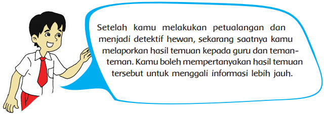
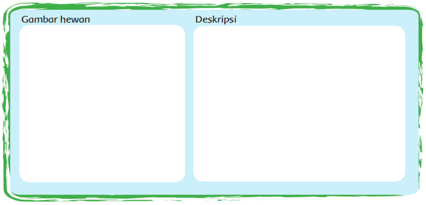
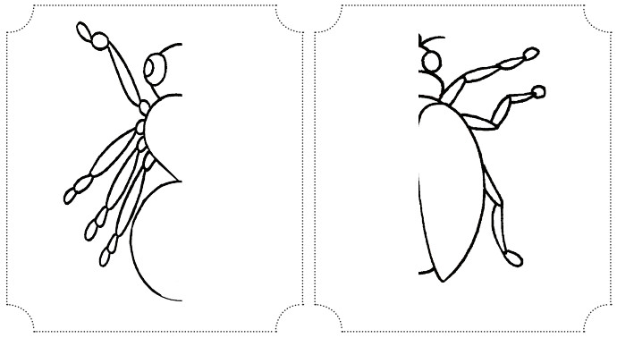
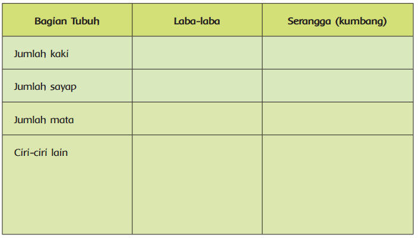
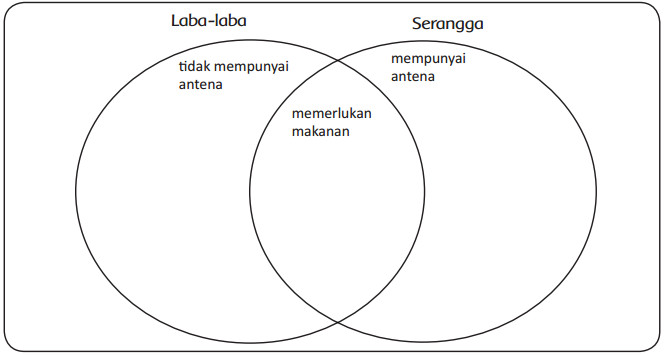
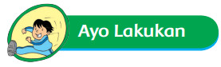
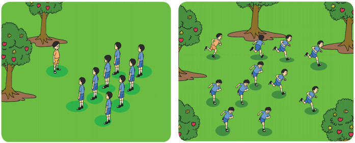

Pembelajaran 2
Activity

Pernahkah terpikir olehmu bersikap seperti Edo? Edo memberikan perhatian yang sangat
besar terhadap hewan-hewan yang ada di sekitar rumahnya. Ia pun mempunyai rasa ingin
tahu yang tinggi. Tidak heran, sebagian waktunya digunakan untuk mengamati berbagai
hewan. Bahkan sering pula ia menulis tentang hewan tersebut.
Sekarang saatnya kamu menulis teks deskriptif tentang salah satu hewan yang kamu
pilih berdasarkan hasil pengamatan yang telah kamu lakukan di rumah.

Amatilah hewan (laba-laba dan serangga) yang kamu bawa dari rumah. Temukan perbedaan
antara laba-laba dan serangga dengan melengkapi gambar dan tabel di bawah ini.


Lengkapi diagram venn berikut untuk menampilkan persamaan dan perbedaan antara
laba-laba dan serangga.


Burung Pelatuk dan Serangga
Setelah kamu mengetahui banyak hal tentang hewan yang ada di sekitar rumahmu,
sekarang saatnya kamu bermain Burung Pelatuk dan Serangga.
Perhatikan penjelasan guru tentang langkah-langkah bermain burung pelatuk dan serangga.

Peran
- Seorang siswa akan berperan sebagai burung pelatuk.
- Siswa lain akan menjadi serangga (semut, belalang, kepik, dan lain sebagainya).
- Serangga akan dikejar dan dimangsa burung pelatuk.
- Serangga berusaha lari menyelamatkan diri.
- Siswa yang tertangkap akan berganti peran menjadi burung pelatuk.
Cara Bermain
- Burung pelatuk berdiri membelakangi serangga yang berbaris.
- Serangga mengucapkan: ‘Burung pelatuk, burung pelatuk, berapa langkah kami
- harus maju?’
- Burung pelatuk memberi tanggapan dengan mengucapkan: misalnya, tujuh langkah.
- Serangga yang berbaris maju tujuh langkah, kemudian berdiri menunggu reaksi dari burung pelatuk.
- Kalau burung pelatuk tidak memberikan reaksi, serangga bertanya kembali: ‘Burung pelatuk, burung pelatuk, berapa langkah kami harus maju?”
- Burung pelatuk menjawab sesuai keinginannya (misalnya, sembilan langkah)
- Serangga maju sembilan langkah, dan begitu seterusnya.
- Ketika serangga semakin dekat, burung pelatuk siap-siap memangsa serangga.
- Serangga berusaha menyelamatkan diri.
- Serangga yang tertangkap akan berganti peran menjadi burung pelatuk.
- Serangga yang tidak pernah tertangkap akan jadi pemenang.
Bagaimana pendapatmu tentang permainan hari ini?